Overview:
Interestingly, I was enrolled in a different class in the first week. Due to a friend, I was interested in this subject and decided to switch and partake in this since I have always taken a liking in web design. Furthermore, I took a media computation class several semesters ago where I can use the knowledge there and further improve my skills. Since I needed to catch up, I decided to look at some of unique websites with interactivity with very different identities to each of them as a starting point of where I want my own website to look feel. Also, it will help me give an idea how Interactive Media is able to push digital design as well!
-------------------------------------------------------------------------------------------------------------------------------
Web Examples↓↓↓
These websites that I've gathered were more focused on the human and website interactions rather than the design aspect of them. I wanted to understand how interactive media has been used even in the most simplistic forms. It was interesting to see the countless possibilities you could do with web design and coding.
I catched up on the web exercise activities that I had to do for the first week!↓↓↓
Arranging folders ---- A very important step in creating an efficient work management space.
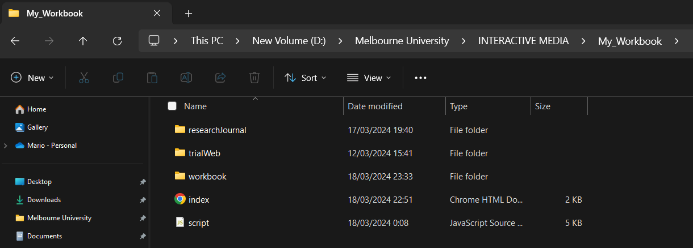
I made sure that each of the names follows the "camelCase" rule even though they're not directly in the code itself. It's a good rule of thumb to get used to!
This piece of web page follows along the basic HTML snippet that was provided to us in the first week. This was really an important exercise especially to me since it helped with refreshing the HTML language again after awhile. Since its only using HTML, it was really interesting to navigate around how to possibly create an aesthetically pleasing web design while being limited.
Overview:
I began to visualize and brainstorm how my workbook website will look visually. Throughout this week I looked at several web designs that I found were coherent in their presentation and innovative in terms of its concept and arrangements. I did several sketching workshops as well as it helped me freely create my web front end design without already thinking too much of the technical aspects. At the end of the day, the website should be uniquely yourself and shouldn’t be limited to certain ideas. Starting the coding part was important and I did only html and few css since I wanted to focus more on the layout whereas the functionality will follow along later on.
-------------------------------------------------------------------------------------------------------------------------------
Websites with amazing front-end designs↓↓↓
Shared several hand picked web designs that I got around to look for in my spare time. These websites to me hold an array of amazing design considerations where they implement their own visual style and language in a unique manner. I love how different they all are and inspiring to me as someone who is trying to create my own site from scratch. There were several characteristics that I took from each of them from the use of color palettes, considering the appropriate typeface to compliment the designs as well as using any other external elements such as images, logos and videos.
Prototyping---Sketching workshop to design a web interface that is unique and playful↓↓↓
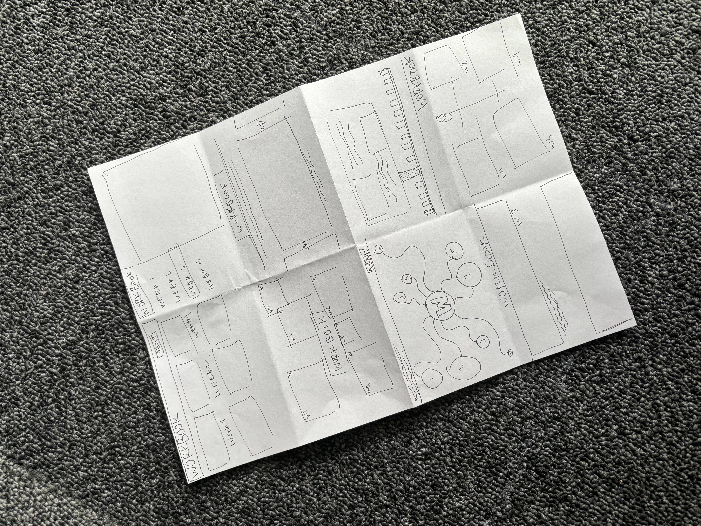
The prototyping exercise made me realize that there are various ways I can present my weekly workbook in a creative manner. I realized a lot of these would need repeating elements in order to present the weekly progress in a sufficient way. I loved the results of the left hand side sketches, especially the two middle ones. Initially I wanted to use the octopus wireframe webbings as the design, however I felt that it might not translate too well and the design language is not something I'm particularly a fan of. I loved the overlapping tabs sketch I made, reminding me of virus windows opening up in a computer. That one might be more simple than the previous iteration but I love how I can do a lot visually with it by adding other elements to complement it.
Developing---Web Design Idea, Desktop Computer Replica↓↓↓
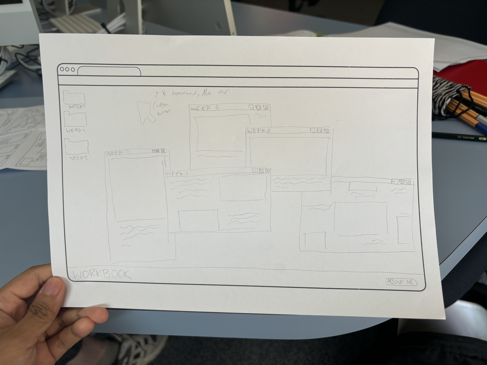
Sketch I’ve made to give a rough idea of how the design is supposed to look like in terms of the layout. I wanted to make sure that the idea makes sense and is able to translate well not only in sketch form but as an actual web design as well.
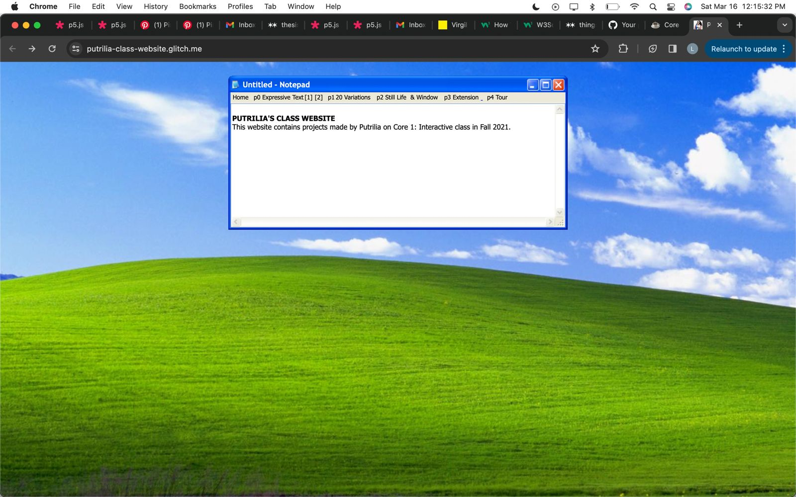
A friend helped me send a design sample that one of her friends did when they made a similar design look that I'm looking for. From here I'm just taking the typefaces and color palette used.
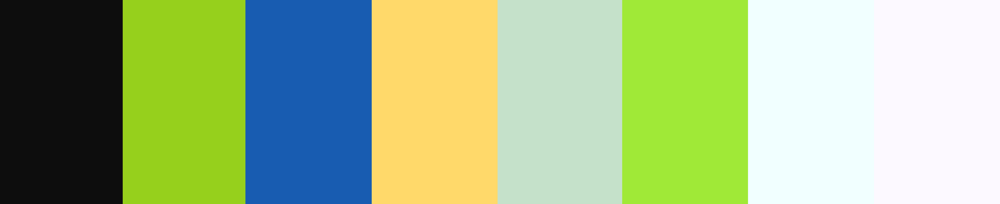
"The quick brown fox jumps over the lazy dog"
Creating my web's main color palette and selection of typefaces. For the typefaces I decided that I wanted to use the stock typefaces of monospace and sans-serif.
Overview:
This week and until the submission date, it’s all about applying the concept of the website into VisualStudioCode. I focused on the html and css aspects first, and then applying the javascript commands onto them. I wanted to focus the visual elements beforehand since I wanted to make sure visually, the design elements all work well alongside one another.
-------------------------------------------------------------------------------------------------------------------------------
Website Inspo↓↓↓
Handpicked web design inspirations that I want to take the techniques and functionalities of, as their interactive design theme is similar to what I'm trying to replicate in my own design. I really love the abstract and lack of neatness within these websites, which almost bring a raw nature to the design. I want my own website to be eye catching and loud from the moment users open it. In a way, I want the users to slowly explore all the elements within my website instead of the website guiding them along.
Web Development↓↓↓
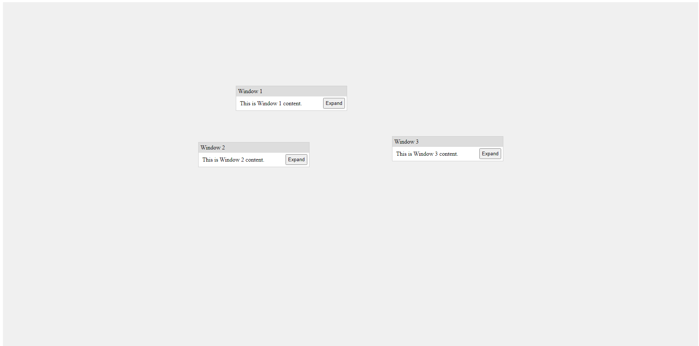
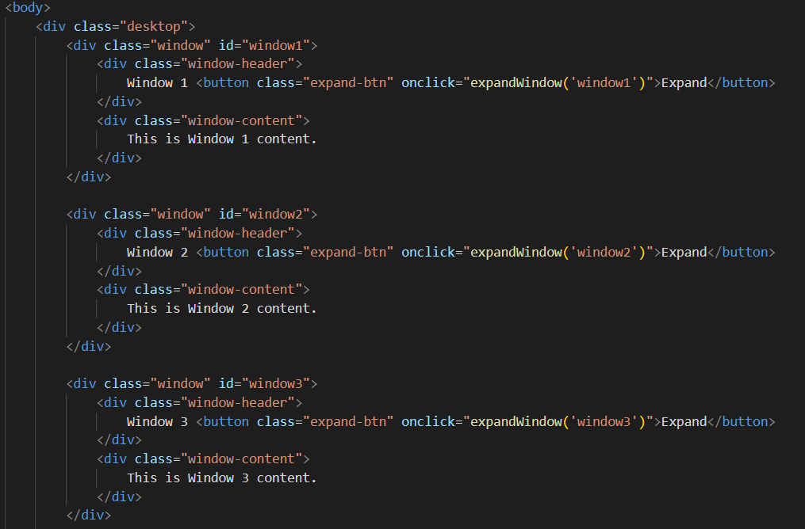
The base skeleton of the process starting with creating the separate divs and titles. As the weeks progress, the div windows will also increase accordingly. I wanted the concept for each window to be its own separate week
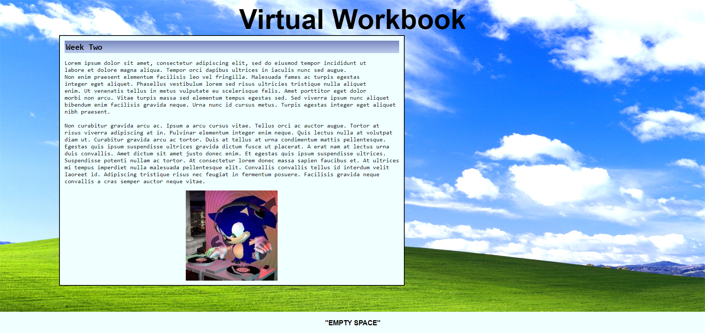
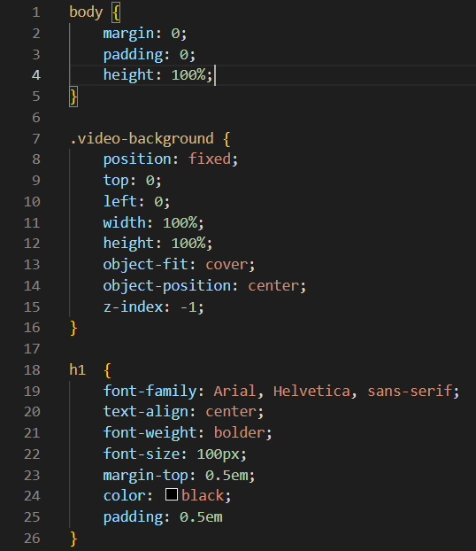
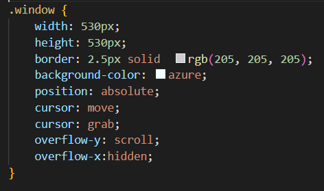
Example of early CSS process, by adding defined typeface, colors, sizes and background images.
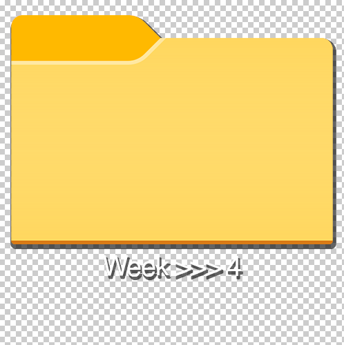
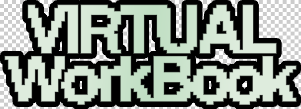
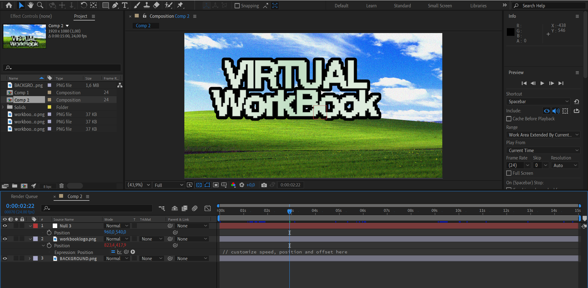
Create some of my own custom assets that is used for my web design, including a custom logo, folder icon and lastly a video for the background of my website to add some dynamic elments.
Javascript Coding Highlights↓↓↓
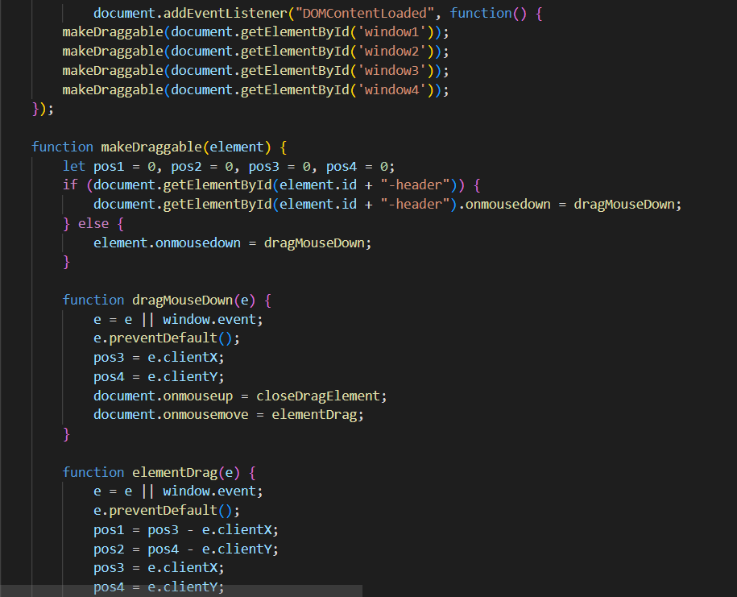
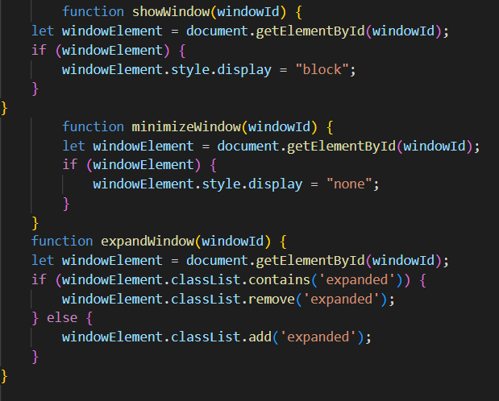
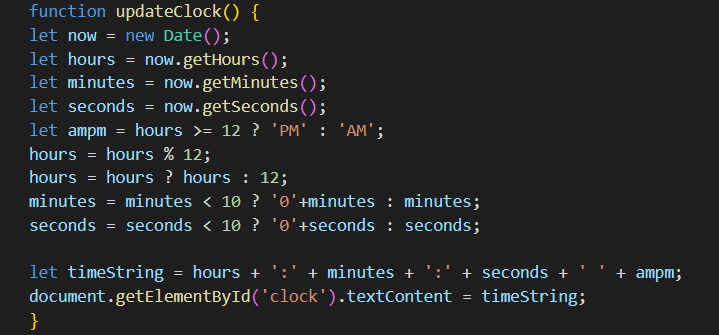
These selected JS codes were the most important ones in helping the user experience of the website. I made sure to have a draggable function for all the separate div windows. Also the implementation of a minimize and expand button to create a flexible impression to the user, allowing them to choose how they want to interact with the respective divs windows. Also since I added the file icons which are clickable, I wanted them to be coded so that it will open up the div windows accordingly. Finally I added a unique detail of code by adding a custom clock that is appropriate to your current location. I feel like these JS commands and the other codes that were not mentioned played an integral part in creating character and depth to the website. It was my goal early on to not only make a website that is visually pleasing, but functional as well.
Current Process↓↓↓
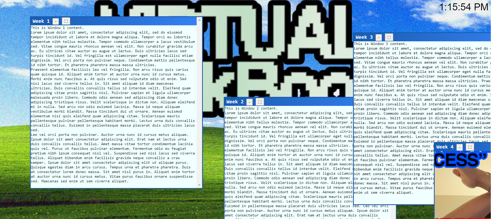
This is the current result of my website, where there might still be some minor tweaks here and there. I'm glad with the current process and I'm hoping to continue work on this website and make it better in the coming weeks.